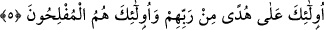
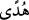
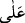

5. “İşte onlar, Rablerinden gelen bir hidâyet üzeredirler ve kurtuluşa erenler de
ancak onlardır.”
Kur’ân “muttakîlere hidâyettir” denilince, “muttakîlerin özelliği ne ki, böyle bir
şeyle mümtaz kılınmışlar?” denilecek olursa buna “Onlar gayba îmân edip namazı
kılan...” diye başlayıp devam eden âyetlerdeki özellikleri sayılarak cevap verilir. “
” ile başlayan âyet; kendisinden önceki âyetle bağlı olmayan bir başlangıç cümlesi
kabûl edersek o zaman mânâ: “İşte bunlar daha önce sayılan sıfatların tabîî sonucudur.”
şeklinde olur.
Gayba îmân ve diğer özellikleri sayılan takvâ ehli kişiler, anılan özellikleri sebebiyle
başkalarından tamâmen farklıdırlar. O sebeble onlar müşâhede yoluna dizilmişlerdir.
Âyette onlardan bahsederken, “işte onlar” diye uzaklık ifâde eden “
” işâret
zamîrinin kullanılması onların derecelerinin yüksekliğini ve fazîletteki üstünlüklerini
gösterir.
“
” kelimesinin nekre olması hidâyetin yüceliğini göstermek, künhüne vakıf
olmanın mümkün olmadığı gibi, değerini takdîr etmenin de mümkün olmadığına işâret
içindir. Nitekim “Falanı görsen, bir adam görmüş olursun” lâfı da buna benzer.
“
” kelimesinin “
” ile kullanılması, muttakîlerin hidâyet ile özdeşleşmelerini
gösterir. Bir şeyi benimseyen kimsenin, o şeyin etkisi ve tasarrufu altına girmesine
işârettir. Bu da ancak tefekküre dalmak, delillere nazar etmek ve amellerde nefs
muhâsebesi yapmakla olur. Allah Teâlâ muttakîlere dünyâda ikrâmda bulunmuş, hidâyet
vermiş ve ölmeden önce kurtuluş yolunu göstermiştir.
Onların bu hidâyeti Rabbları katından olup Hakk’ın her türlü hidâyet ve tevfîkını
şâmildir. Rab kelimesinin hidâyette olanların yerini tutan zamîre izâfe edilmesi, bu
sıfatla mevsûf olanların ve onlara izâfe edilen şeyin değerini yüceltmek içindir. Ayrıca
bu âyette hidâyete sâhib olanların bütün bu sıfatları taşıyanlar olduğu anlatılmıştır.
“Allah’a, bize gönderilene, İbrâhîm’e, İshâk’a, Ya’kûb’a ve torunlarına
gönderilene, Mûsâ ve Îsâ’ya verilene, Rabbleri tarafından peygamberlere
verilenlere, onları birbirinden ayırd etmeyerek inandık, biz O’na teslim olanlarız.”
deyin. Sizin inandığınız gibi inanmış olsalar doğru yolu bulmuş olurlardı.” (el-
Bakara, 2/136-137) buyurularak îmânın şerefini beyân için, diğer amel ve ibâdetlerin
adı geçmeden kalb ile inanma ve dil ile ikrârın sonucunun hidâyet olduğu
anlatılmaktadır. Çünkü îmân güçlü olursa nefsin karşı koyması ona tesir edemez. Îmân
ona gâlib gelir, uzun süre bâtılda kaldıktan sonra onu tevbeye götürür. Nitekim Allah
Teâlâ şöyle buyurmuştur: “İnananlar ve sâlih amel işleyenleri îmânlarına karşılık
Rabbları doğru yola iletir.” (Yûnus, 10/9)
“Tâat ehli olanların nûrları önlerinden ve sağ yanlarından koşup gider. Onlar tâat